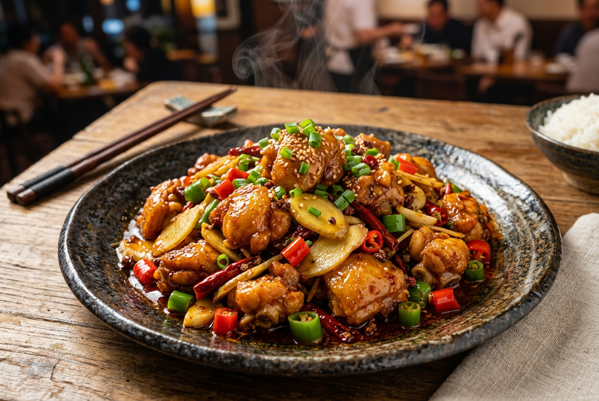
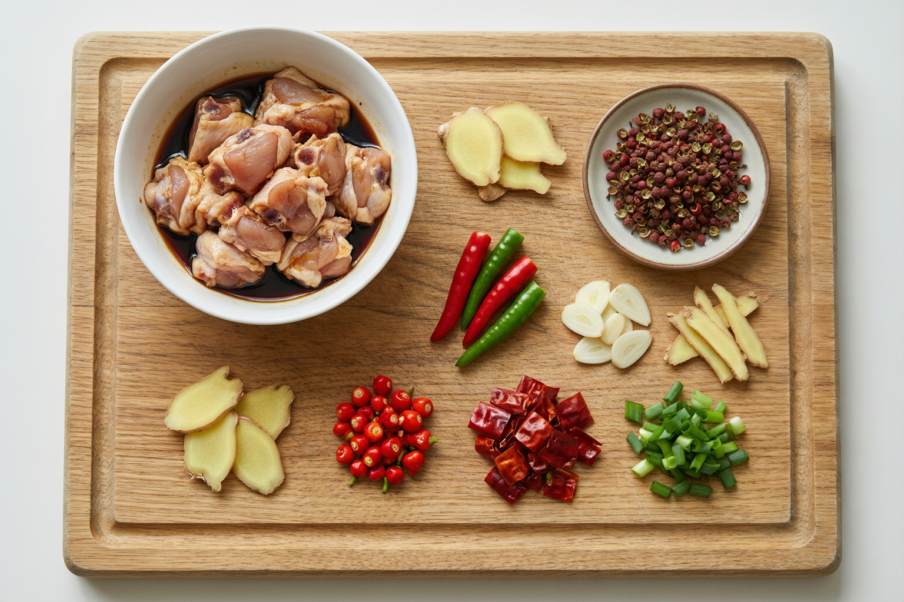
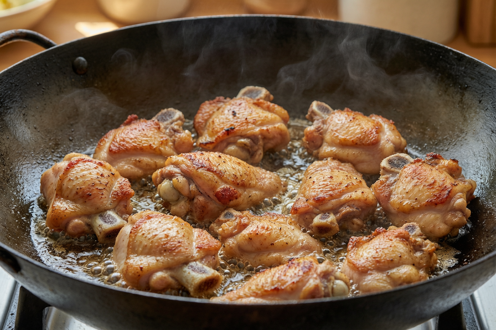

| 食材 | 用量 | 说明 | |
|---|---|---|---|
| 主料 | |||
| 仔公鸡（整只） | 1只 约1000-1200g | 让摊主处理，自己剁2-3cm小块 | |
| 仔姜（嫩姜） | 150g | 切厚片，可多不可少 | |
| 辣与麻（重麻辣档） | |||
| 干辣椒（二荆条干椒） | 30g | 剪段去大部分籽 | |
| 红二荆条（新鲜） | 4-5根 | 切滚刀段 | |
| 青二荆条/螺丝椒 | 4-5根 | 青辣香，红绿搭配 | |
| 小米辣 | 8-10根 | 纯增辣，怕辣减至3-4根 | |
| 花椒（青+红） | 共8-10g | 重麻可加到12g | |
| 去腥爆香 | |||
| 大蒜 | 1整头 约10瓣 | 切片 | |
| 老姜 | 20g | 切片（仅去腥爆香用） | |
| 大葱 | 1根 | 葱白切段、葱绿切花 | |
| 腌料 | |||
| 料酒 | 2汤匙 | ||
| 生抽 | 1汤匙 | ||
| 盐 | 3g | ||
| 白胡椒粉 | 2g | ||
| 红薯淀粉 | 15g | 比玉米淀粉更耐煎 | |
| 食用油（封腌用） | 1汤匙 | 最后拌入锁水 | |
| 炒制调味 | |||
| 郫县豆瓣酱（剁细） | 1汤匙 | 增酱香红油 | |
| 生抽 | 1汤匙 | ||
| 老抽 | 半茶匙 | 仅上色 | |
| 白糖 | 3g | 提鲜平衡辣 | |
| 炒菜油 | 3-4汤匙 | 半煎用 | |
整鸡剁成 2-3cm 见方的小块（带骨带皮）。清水加一小把盐抓洗2遍，洗净血水，彻底沥干或厨房纸吸干。
鸡块加料酒、生抽、盐、白胡椒粉，用手抓打到发黏、汤汁被吸收（约1分钟）；再加淀粉抓匀形成薄浆；最后淋1汤匙油拌匀封住水分。静置 30 分钟。

干辣椒剪2cm段、抖掉大部分籽；仔姜切厚片；红绿二荆条切滚刀段、小米辣切段；蒜切片、老姜切片、葱白切段葱绿切花；花椒单独备一碟。

锅烧热下3-4汤匙油，鸡块单层平铺下锅（分批煎，不堆叠）。先不翻动，煎 2-3 分钟定型上色，翻面，煎到两面金黄、鸡皮出油、边缘微焦，约 6-8 分钟。盛出备用。
锅留底油（约1汤匙），转小火下郫县豆瓣炒出红油→干辣椒段+花椒，小火煸出糊辣香（辣椒变枣红、闻到香味即可）→下老姜片、蒜片炒香。
转最大火，鸡块回锅翻炒裹红油；沿锅边烹入生抽、老抽翻匀上色。接着下仔姜片+红绿二荆条+小米辣，猛火爆炒约 2 分钟——仔姜鲜椒保持脆口，断生出香即可！
加白糖3g、盐按口味1-2g（味精可选），快速兜匀尝味；关火淋几滴香油、撒葱花，可再补撒现舂花椒面加强麻味。装盘即成。
| 想要的效果 | 怎么调 |
|---|---|
| 🔥 更麻 | 花椒加到12g，起锅再撒花椒面；青花椒占比调高 |
| 🌶 更辣 | 小米辣加倍、干辣椒不去籽 |
| 🍲 更下饭有酱香 | 郫县豆瓣加到1.5汤匙 |
| 🌿 更清爽鲜辣 | 省豆瓣和干辣椒，只留花椒+仔姜+鲜椒，走"鲜锅"路线 |
| 👶 孩子/长辈同桌 | 干辣椒花椒减半、小米辣去掉，仔姜鲜椒照旧 |
原因：用了老鸡，或煎后又炒太久。
解决：换仔公鸡；配料下锅后总翻炒控制在2-3分钟。
原因：鸡块没沥干；油温太低；一次下太多堆叠。
解决：彻底吸干水；中大火热油；分批单层煎。
原因：干辣椒/花椒/豆瓣炒糊了。
解决：全程小火煸香，颜色到枣红就下一步。
原因：腌制时间不够；没抓打上劲。
解决：腌足30分钟，抓到发黏；起锅前尝味补盐。
原因：仔姜下锅太早、炒太久。
解决：仔姜和鲜椒最后2分钟才下，猛火快炒。
原因：鸡油没逼够；油放太多。
解决：煎足时间逼出鸡油；半煎油量控制在3-4汤匙。
配一碗冒尖白米饭 + 紫菜蛋花汤 / 冰镇酸梅汤
吃剩第二天回锅加一把蒜苗再爆，更香 😋